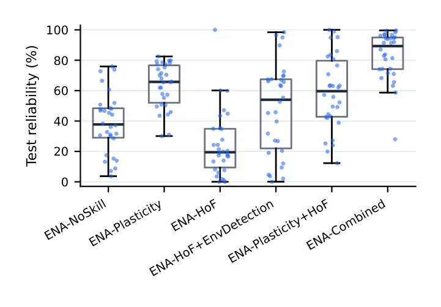
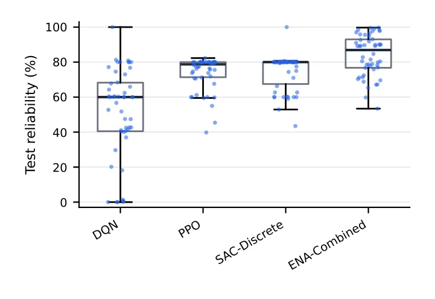
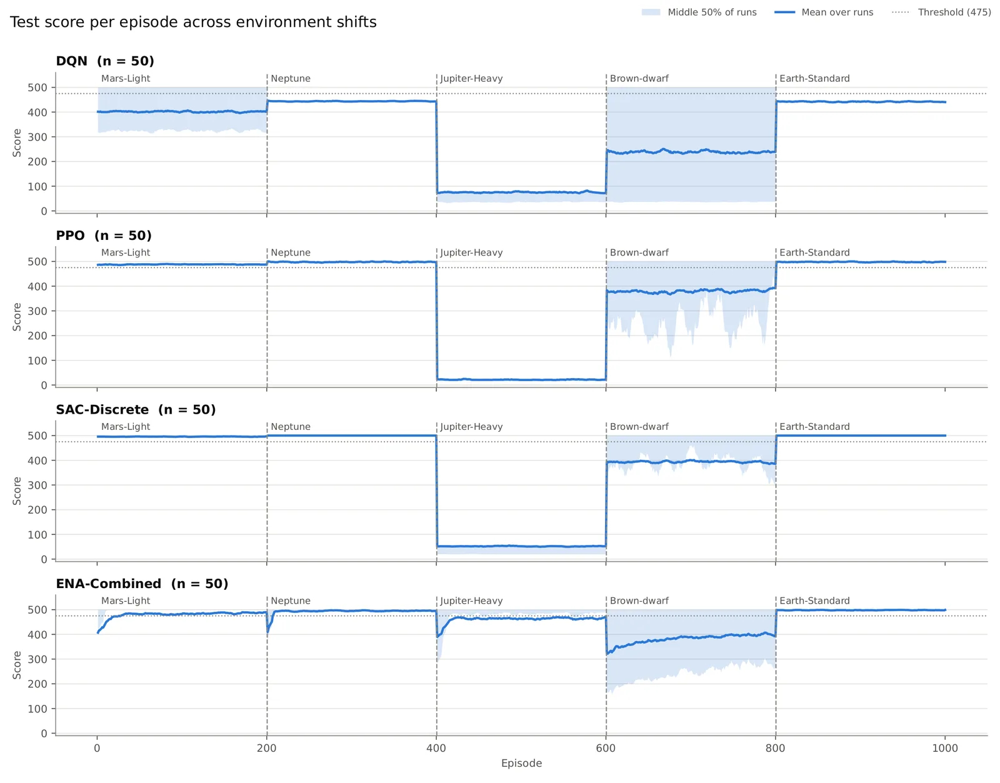

O Problema do Esquecimento Catastrófico em RL Contínuo
Em Aprendizado por Reforço (RL), agentes são tipicamente treinados sob a suposição de que o ambiente é estacionário. Quando as dinâmicas do ambiente mudam — por exemplo, alterações na física de um robô ou nas regras de um jogo —, um agente com uma única política tende a adaptar-se sobrescrevendo os parâmetros que codificavam o comportamento anterior. Esse fenômeno é conhecido como esquecimento catastrófico. Ao retornar às condições originais, o agente precisa reaprender tudo do zero.
O Aprendizado por Reforço Contínuo (Continual RL) busca agentes que se adaptem a mudanças sem perder o desempenho em dinâmicas previamente encontradas. Abordagens existentes protegem ou particionam os pesos de uma rede compartilhada através de regularização, replay de experiências ou cabeças específicas para tarefas. Outra família mantém políticas separadas para cada contexto detectado, recuperando-as quando o contexto retorna.
Os autores deste paper, Blas Eugenio Vicco Zarate e Miguel Hernán Vicco, da Universidad Nacional del Litoral (Argentina), investigam uma terceira rota: a neuroevolução. Diferente do gradiente descendente, a neuroevolução treina redes neurais através de mutação e seleção em uma população de candidatos. A questão central é se um conjunto pequeno de habilidades, geradas por busca evolutiva, pode ser transformado em uma memória reutilizável que mitigue o esquecimento quando combinado com detecção de ambiente e busca dirigida por falhas.
A Arquitetura do Agente Neuroplástico Evolutivo (ENA)
O Agente Neuroplástico Evolutivo (ENA) é projetado para operar sem computar gradientes. Ele mantém uma população de pequenas redes neurais, chamadas de especialistas, cada uma carregando uma pontuação escalar de 'Confiança' (Trust). Durante o treinamento, o ambiente é apresentado sequencialmente, mas o agente nunca recebe notificações explícitas sobre quando o ambiente muda ou qual ambiente está sendo experimentado. Ele observa apenas estados, ações, recompensas e finais de episódio.
O mecanismo do ENA opera em ciclos. Em cada episódio de treinamento, um especialista é selecionado para atuar. Sua recompensa total atualiza sua pontuação de Confiança. Em seguida, um valor chamado 'Plasticidade' decide quanta da população será reavaliada. Essa Plasticidade é modulada dinamicamente pelo déficit de desempenho do especialista ativo: quanto pior o desempenho, maior o esforço de busca por novas soluções.
Políticas validadas são arquivadas em um 'Hall of Fame'. O ENA possui duas habilidades principais para tornar esse arquivo útil em mudanças de ambiente: detecção de ambiente e seleção de especialistas. A detecção identifica transições nas dinâmicas físicas e reconhece regimes já encontrados, baseando-se estritamente nas observações não assistidas do agente. A seleção de especialistas decide qual especialista arquivado deve ser implantado, utilizando Reuso Bayesiano de Políticas (Bayesian Policy Reuse), que integra a evidência do detector com as recompensas episódicas observadas.
Mecanismos de Detecção e Indexação
Um dos pilares do ENA é a capacidade de indexar especialistas pelo regime físico em que foram validados. Isso responde à pergunta de pesquisa RQ1a: preservar políticas bem-sucedidas é suficiente? Os autores descobrem que não. O arquivamento sem indexação explícita pelo regime físico não melhora a confiabilidade e, em alguns casos, piora o desempenho.
No ambiente CartPole, a detecção de ambiente avalia a precisão preditiva sob modelos de transição de cada regime conhecido. Se o modelo atual não se ajusta bem aos dados recentes, o detector sinaliza uma mudança de física. No ambiente mais complexo HalfCheetah, o detector aplica uma perturbação estruturada (um chirp mecânico) e analisa as características da resposta mecânica para identificar o regime.
Quando uma mudança de física é confirmada, o detector inicia um novo regime, resetando as evidências do detector, as estatísticas de entrada e o histórico de recompensas. Isso permite que o ENA crie 'nichos' distintos para diferentes dinâmicas. O arquivo de especialistas é organizado por esses nichos, permitindo que, ao retornar a um regime anterior, o sistema recupere o especialista correto através do Reuso Bayesiano de Políticas.
Plasticidade e Busca Dirigida por Falhas
O ENA introduz um mecanismo de 'Plasticidade' que ajusta dinamicamente o esforço de busca. Em vez de avaliar uniformemente toda a população em todos os momentos, o agente concentra recursos computacionais quando o desempenho cai. Se o especialista ativo apresenta um déficit de performance, a Plasticidade aumenta, levando a uma reavaliação mais intensa de outros candidatos na população.
Essa abordagem responde à pergunta de pesquisa RQ2: a concentração dinâmica de esforço de busca durante falhas de desempenho alcança retenção competitiva enquanto reduz o custo computacional? A busca é 'dirigida por falhas' no sentido de que a necessidade de explorar novas soluções é acionada pela deterioração do desempenho atual, não por um cronograma fixo.
Os especialistas na população evoluem através de mutações, cruzamentos e a introdução de novos especialistas ('gladiadores'). Os gladiadores, uma vez arquivados no Hall of Fame, nunca são substituídos, servindo como memórias estáveis de soluções anteriores. A seleção do especialista ativo para o próximo episódio segue uma política epsilon-greedily baseada na pontuação de Confiança, permitindo exploração ocasional de especialistas menos confiáveis.

Avaliação no CartPole: Ablação e Retenção
Os autores avaliaram a arquitetura no ambiente não estacionário CartPole, onde a física muda sequencialmente entre cinco ambientes. A ablação dos componentes do ENA revela a importância de cada módulo. A versão completa (ENA-Combined), com Plasticidade, Hall of Fame e detecção de ambiente, alcançou uma taxa de sucesso média de 83,2% nos testes.
Sem nenhum dos módulos especializados, o ENA-NoSkill atingiu apenas 38,5% de confiabilidade. A adição da Plasticidade foi crucial para adquirir políticas competentes nos ambientes mais difíceis. No entanto, apenas a combinação de Plasticidade com o arquivamento indexado pela detecção de ambiente permitiu a retenção consistente do desempenho em todos os ambientes aprendidos.
Os resultados mostram que o arquivamento sozinho (ENA-HoF) é insuficiente e pode até reduzir a confiabilidade se não houver detecção para organizar o arquivo. A detecção de ambiente não apenas indexa o arquivo, mas também aumenta a capacidade do Hall of Fame, permitindo que o agente mantenha mais especialistas válidos simultaneamente. A retenção foi medida como a razão entre o retorno no teste final e o retorno no final da fase de treinamento; valores acima de 100% indicam que o desempenho foi mantido ou até melhorado.
Desempenho no HalfCheetah e Comparação com Gradientes
Para testar a escalabilidade para ambientes mais complexos, o ENA foi avaliado no HalfCheetah. Aqui, o detector de ambiente usa perturbações mecânicas para identificar regimes. Os resultados mostram que o ENA é capaz de adaptar-se a novos regimes e recuperar especialistas anteriores, mantendo seu retorno de fase de treinamento nos ambientes deixados para trás.
É importante notar que, embora o ENA mostre boa retenção relativa, seu retorno absoluto é significativamente menor do que o de métodos baseados em gradiente como PPO (Proximal Policy Optimization) e SAC (Soft Actor-Critic). No HalfCheetah, o ENA-Combined manteve, em média, 115,6% de retenção, enquanto PPO e SAC mantiveram 39,2% e 34,4%, respectivamente. No entanto, os retornos absolutos do ENA eram muito inferiores aos dos métodos de gradiente.

Limitações e Custos Computacionais
O paper não estabelece superioridade do ENA sobre outros métodos de aprendizado contínuo em termos de desempenho absoluto. As evidências concernem à arquitetura completa e não isolam a otimização livre de gradientes como causa única da retenção. Além disso, o custo computacional da busca evolutiva é alto. A ablação mostrou que a Plasticidade aumenta o número de avaliações de candidatos, embora o aumento exato não tenha sido estatisticamente significativo em todas as métricas, podendo chegar a mais de 800.000 passos adicionais por réplica.
Detecção de Ambientes Não Vistos
Uma questão importante é como o ENA lida com ambientes nunca vistos durante o treinamento. No CartPole, o detector reconheceu um ambiente não visto (Neptune) como sendo similar a um já conhecido (Earth) na maioria das réplicas, permitindo uma transferência parcial de conhecimento. No entanto, em outros ambientes não vistos (Brown-dwarf), o detector falhou em reconhecer similaridades, e o agente teve que aprender quase do zero, embora ainda assim melhor do que se não tivesse nenhuma memória.

Conclusões e Perspectivas
O Agente Neuroplástico Evolutivo (ENA) demonstra que é possível mitigar o esquecimento catastrófico em RL contínuo sem usar gradientes, desde que se combine arquivamento de especialistas, detecção de regimes físicos e seleção bayesiana. A detecção de ambiente é um componente crítico; sem ela, o arquivamento perde sua utilidade prática devido à falta de indexação correta.
Os autores concluem que a memória pode ser construída online, sem rótulos, mas os mecanismos de detecção variam entre domínios. No CartPole, modelos de transição funcionam bem; no HalfCheetah, perturbações mecânicas são necessárias. O trabalho abre caminho para agentes mais robustos a mudanças de domínio, especialmente em cenários onde o cálculo de gradientes é proibitivo ou impraticável, embora ainda haja um abismo de desempenho em relação aos métodos baseados em gradiente.
O que fica
- O ENA mitiga o esquecimento catastrófico arquivando políticas especialistas indexadas por regimes físicos detectados, sem usar gradientes.
- A ablação mostra que a detecção de mudança de ambiente é crítica; apenas arquivar não é suficiente sem indexação correta.
- Em ambientes não estacionários, o ENA retém melhor o desempenho anterior, mas tem retorno absoluto menor que métodos baseados em gradiente como PPO e SAC.
Paper original: Mitigating Catastrophic Forgetting with Physics-Indexed Specialist Memory: the Evolutionary Neuroplastic Agent
Comentários
Nenhum comentário ainda. Seja o primeiro.